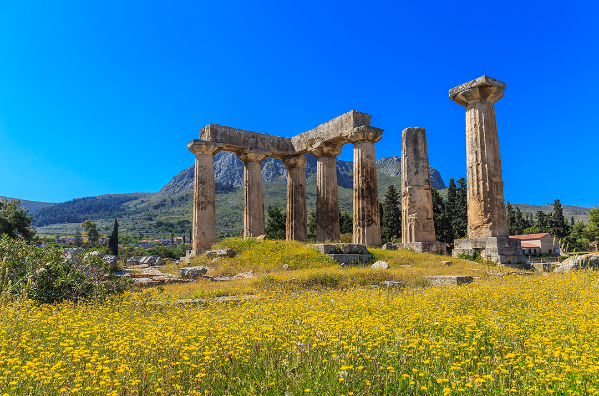
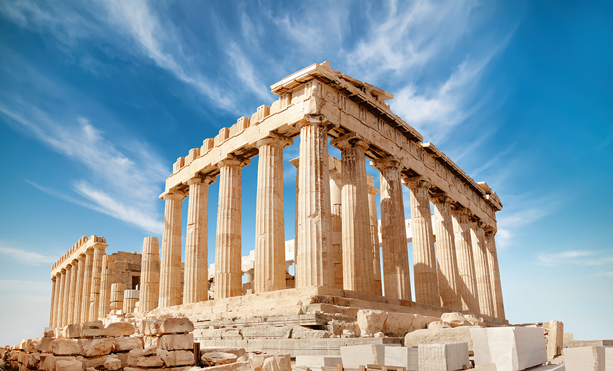
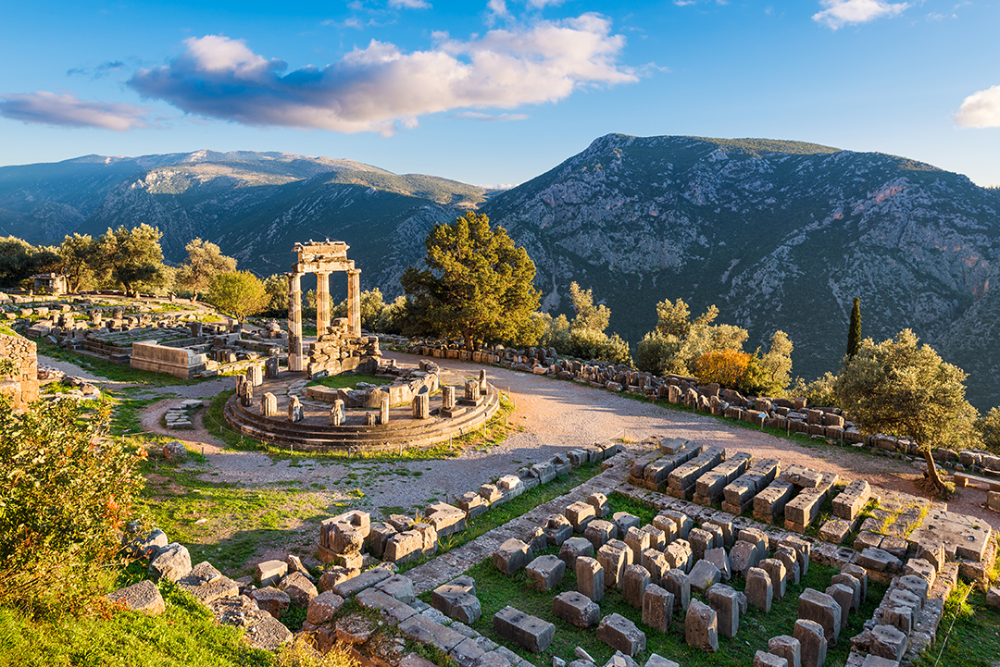
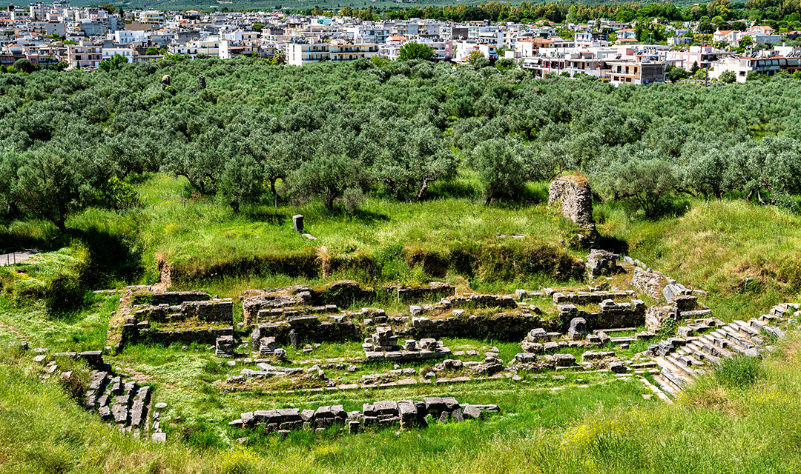
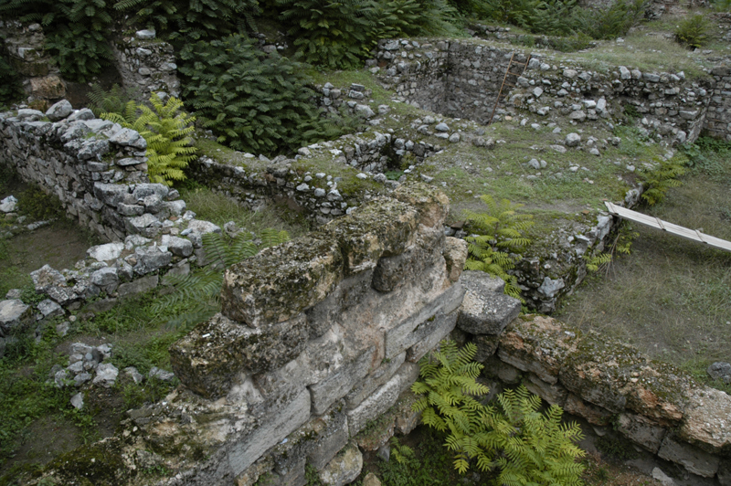

Mapping in Ancient Greece
The Ancient Greeks knew that the Earth was round (like an oblate spheroid, not round like a pizza). Greek mathematician Pythagoras reasoned that since the Moon was observed to be round, it stood to reason that the Earth was also round. Another famous Greek mathematician and philosopher, Aristotle also made the case for a spherical Earth. Not only that, a fairly accurate estimate of the Earth's circumference was determined by a Greek mathematician named Eratosthenes a couple of hundred years later using a clever method of timing, distance, and measuring angles of shadows.
Eratosthenes learned that at noon on the summer solstice, no vertical shadows were cast in the City of Syene (located at 24°05′20″N 32°53′59″E, which is slightly north of the Tropic of Cancer). From his vantage point in Alexandria (located at 31°12′N 29°55′E), he measured the shadow cast at noon on the summer solstice was 7° of arc. He reasoned that on a 360° sphere, this meant that Alexandria and Syene were 7° apart. Eratosthenes hired a man to pace the distance between the two cities to which measured 5,000 stadia apart (or approximately 800 kilometres).
Using these numbers, Eratosthenes calculated the Earth's circumference using 7.2° of arc, which was 1:50 of 360°. Multiplying 50 by 800 kilometres yields the result of 40,000 kilometres. Fast forward over 2,200 years to the Space Age, satellite data has provided us with 40,030 kilometres for the measurement for the circumference of the Earth. Eratosthenes was only 30 kilometres off, which ain't bad for a smart Greek dude with a stick (and that man with the tough feet whom he hired to pace the distance!).
Despite over 2500 years of empirical science providing evidence for a spherical Earth, there appears to be a resurgence in Flat Earth Theory proponents in modern times. There are many possible reasons for this—the reasons being only useful to know if you're wanting to put the effort into changing these people's minds on the subject. Otherwise, situational awareness is more than good enough.
Some archeological photos
 |
 |
 |  |  |  |  |